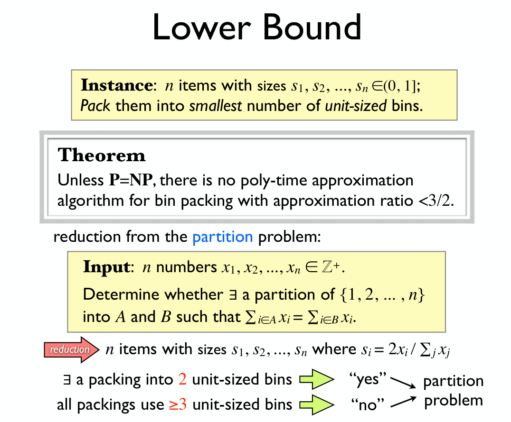
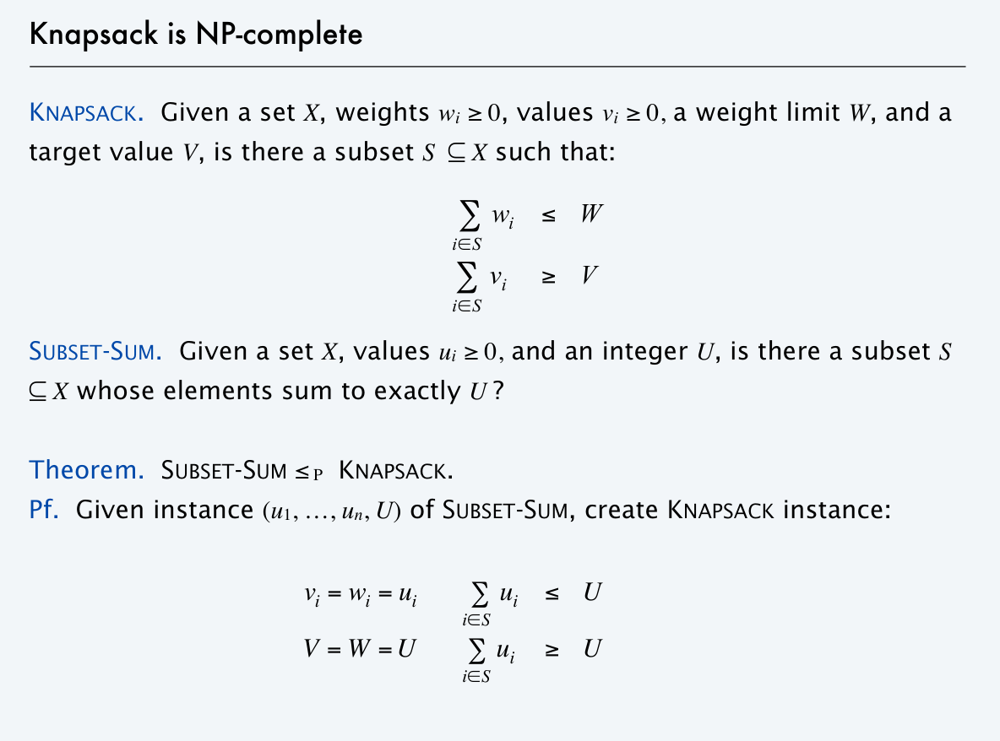

Chapter 11 | Approxiamtion
约 5696 个字 3 张图片 预计阅读时间 38 分钟
近似算法
links
Wikipedia: https://en.wikipedia.org/wiki/Approximation_algorithm
在上一章中我们介绍了 P/NP 问题，而大家普遍认为 P ≠ NP，这就意味着对于某些问题，我们无法使用多项式时间解决，而在问题规模变大时，越发不可接受。
因此，我们考虑能否退而求其次，在多项式时间内求一个比较优的解。更具体的来说，我们尝试寻找一种多项式算法，使得其结果始终在关于准确解的可接受偏差范围内，对于这种算法，我们称之为近似算法 (approximation algorithm)。
我们设 \(f(n, x)\) 是对输入大小为 \(n\) 的情况下，对结果 \(x\) 的最坏情况的一个直观量化（例如 dist, weight...
则称给定算法为 \(\rho\) 近似算法 (\(\rho\)-approximation algorithm)。
近似算法 v.s. 随机算法
在看到近似算法时，我脑子里一下子浮现出了 [ 随机算法 ] 的概念，同样是求准确解的近似解，两者有何区别呢？
hint: 最坏情况
近似算法和随机算法最大的区别就是，当我们设计、分析、讨论近似算法的时候，我们关注的都是它的最坏情况。也就是说，近似算法是完全可控的，而纯粹的随机算法则是通过概率来减少坏情况出现的可能，并没有严格的约束。近似算法最坏也就坏到 \(\rho\)，而随机算法最坏可以坏到海拉鲁大陆。
近似范式
links
Wikipedia: https://en.wikipedia.org/wiki/Polynomial-time_approximation_scheme
近似范式 (approximation scheme)指的是对于某个优化问题的一族相同模式的算法，它们满足对于确定的 \(\epsilon > 0\)，算法的近似比为 \(1+\epsilon\)。
可以粗糙地理解为
： “范式”是一个输出为算法的特殊函数，而 \(\epsilon\) 是“范式”的一个参数，对于特定的 \(\epsilon\)， “范式”输出一个特定的算法（这些算法有着相同的模式） ，而这些“范式”输出的算法，都解决同一个问题，并且对于任意固定的 \(\epsilon\) 其近似比为 \(1+\epsilon\)。而关于 \(\epsilon > 0\) 这个约束，是因为近似比必定大于 1。
而此时，这一族的算法的复杂度可以表示为 \(O(f(n, \epsilon))\)，如 \(O(n^{2/\epsilon}), O((\frac{1}{\epsilon})^2n^3)\)。当 \(f(n, \epsilon)\) 关于 \(n\) 是多项式时，我们称其为多项式时间近似范式 (polynomial-time approximation scheme, PTAS)。当 \(f(n, \epsilon)\) 关于 \(n\) 和 \(\frac{1}{\epsilon}\) 都是多项式时，我们称其为完全多项式时间近似范式 (fully polynomial-time approximation scheme, FPTAS)。
为什么要区分 PTAS 和 FPTAS 呢？我们观察 \(\epsilon\) 对算法的影响：随着 \(\epsilon\) 的减小，近似比逐渐变小，即准确度提高；而 \(\frac{1}{\epsilon}\) 变大，而通常来说 \(\frac{1}{\epsilon}\) 与算法复杂度都是正相关的，因此会导致算法复杂度升高。如果说这个近似范式是 FPTAS，那么为了提高准确度而缩小 \(\epsilon\)，导致的复杂度变化是相对可接受的（多项式级的变化，如 \((\frac{1}{\epsilon})^2n^3\) 关于 \(\frac{1}{\epsilon}\) 是多项式级的
接下来，我们以若干具体例子做分析，以便更好地理解近似算法。
[ 案例 ] Approximate Bin Packing
links
Wikipedia: https://en.wikipedia.org/wiki/Bin_packing
装箱问题指的是，给定 \(N\) 个 item，第 \(i\in [1,N]\) 个 item 的 size 为 \(S_i \in (0,1]\)，一个 bin 的大小为 \(1\)，尝试寻找最少的，能够装载所有 item 的 bin 的数量。
🌰 例子
给定 7 个 item，size 分别为 \(0.2, 0.5, 0.4, 0.7, 0.1, 0.3, 0.8\)，则最少需要 3 个 bin（准确解
- bin 1: \(0.2 + 0.8\);
- bin 2: \(0.7 + 0.3\);
- bin 3: \(0.4 + 0.1 + 0.5\);
显然我们发现这个解必定是最优解
这是一个 NP hard 问题，现在我们考虑三种近似解法。需要注意的是，这三种都是在线 (online)解法（Place an item before processing the next one, and can NOT change decision
(online) Next Fit (NF)
links
Wikipedia: https://en.wikipedia.org/wiki/Next-fit_bin_packing
NF 策略总是选择当前最后一个 bin，若能够容纳，则将当前 item 放入其中，否则新开一个 bin。
虽然根据我们的直观感受，这个算法是比较烂的，但是事实上，这个算法对于解决这样的 NPH 问题还是有可取之处的。事实上，许多介绍的近似算法都看起来非常的 Naive，不过还是比较有效的。
NF 策略总是使用不超过 \(2M-1\) 个 bin，其中 \(M\) 表示准确解的 \(\#bin\)。
proof for 2M-1
我们从 NF 的结果出发，证明当 NF 的结果为需要 \(2M-1\) 或 \(2M\) 个 bin 时，准确解为至少需要 \(M\) 个 bin。
假设 \(S(B_i)\) 表示第 \(i\) 个 bin 的 size，则根据 NF 的定义，有：\(S(B_{i}) + S(B_{i+1}) > 1\)（是 NF 的必要不充分条件
1. 当 NF 的结果是需要 \(2M-1\) 个 bin 时：
即 item 的总 size 至少为 M，而每个 bin 最多能装 1 size，所以在即使全部 bin 都装满的情况下，最少需要 \(M\) 个 bin，因此准确的解至少需要 \(M\) 个 bin。则 NF 结果为 \(2M-1\) 个 bin 时，准确结果至少为 \(M\)；所以反过来说，如果准确结果为 \(M\)，NF 的近似算法得到的结果不会超过 \(2M\)，该算法的近似比为 2
2. 而当 NF 的结果是需要 \(2M\) 个 bin 时，可以转化为 \(2M-1\) 的情况。
(online) First Fit (FF)
links
Wikipedia: https://en.wikipedia.org/wiki/First-fit_bin_packing
FF 策略总是选择第一个能放下当前 item 的 bin，若所有 bin 都无法容纳当前 item，则新开一个 bin。
NF 策略总是使用不超过 \(\lfloor 1.7M \rfloor\) 个 bin，并且存在一组能对边界取等的输入（也就是说这个边界是比较紧的
(online) Best Fit (BF)
links
Wikipedia: https://en.wikipedia.org/wiki/Best-fit_bin_packing
BF 策略总是选择能够容纳当前 item 且剩余空间最小的 bin（即 tightest
BF 策略也总是使用不超过 \(\lfloor 1.7M \rfloor\) 个 bin，并且存在一组能对边界取等的输入（同样说明这个边界是比较紧的
虽然在线做法由于对信息把握的不全面，在不特殊构造输入的情况下甚至几乎不可能达到最优解，但是现实世界中有很多能建模为装箱问题的问题，都要求使用在线做法解决。因此，研究在线做法还是有其意义的。
此外，关于在线做法，有一个结论：
theorem
对于装箱问题，如果限定使用在线做法，则最优的近似解法，其最坏情况的结果也至少需要准确解的 \(\frac{5}{3}\)。
PPT 上的原话是，无论哪种在线做法也至少需要使用 \(\frac{5}{3}\) 的准确解给出的数量，但是显然这个 \(\frac{5}{3}\) 是针对最坏解的讨论。回顾「近似算法 v.s. 随机算法」这个 block 里的内容，我们分析近似解，都是针对其最坏情况来说的。
Lower Bound for bin packing problem

(offline) First Fit Decreasing (FFD)
离线做法的优势在于它能够获得所有 item 的信息以求统筹规划。这里给出的近似做法是，将 item 按照 size 降序排序，而后使用 FF（或 BF，由于单调性，两者等价
🌰 例子
给定 7 个 item（同之前的 🌰
- bin 1: \(0.8 + 0.2\);
- bin 2: \(0.7 + 0.3\);
- bin 3: \(0.5 + 0.4 + 0.1\);
FFD 策略总是使用不超过 \(\frac{11}{9}M + \frac{6}{9}\) 个 bin（为啥就连 wiki 也不约 6/9
[ 案例 ] Knapsack Problem
link
Wikipedia: https://en.wikipedia.org/wiki/Knapsack_problem
一个与装箱问题很像的问题是背包问题。其大致描述如下：给定一个容量为 \(M\) 的背包，以及 \(N\) 个 item，第 \(i\) 个 item 的重量为 \(w_i\)，其利润为 \(p_i\)。要求在不超过背包容量的前提下，使得背包中的利润最大化
注意
或许在学习 dp 的时候你已经接触过背包问题了，但是请注意，我们这里讨论的背包问题有一个非常重要的特点就是，容量和利润都是实数，更直白的来说，你没办法通过将容量或利润作为状态来 dp 求准确解。
而根据每一个物品能否自由拆分，背包问题分为 fractional version 和 0-1 version 两类。
Knapsack is NP-complete

Fractional Version
如果我们记 \(x_i\in[0,1]\) 为第 \(i\) 个 item 的选中量（即假设 item 都是连续可分的
🌰 例子
假设现在 \(M = 20.0\)，并且 \(N = 3\)，分别是：
- item 1: \(w_1 = 18.0, p_1 = 25.0\);
- item 2: \(w_2 = 15.0, p_2 = 24.0\);
- item 3: \(w_3 = 10.0, p_3 = 15.0\);
则最优解为 \(x_1 = 0, x_2 = 1, x_3 = \frac{1}{2}\)，此时 \(\sum_{i}^{N} p_ix_i = 31.5\)。
由于 \(x_i\in[0,1]\)，给了我们极大的选择自由，我们可以选择任意多的某个物品。那么非常朴素的一个想法就是，尽可能多地选择“性价比”高的物品。也就是说，我们可以按照 \(\frac{p_i}{w_i}\)（PPT 称之为 profit density）降序排序，而后从大到小依次选择物品，直到背包装满为止。
不过该做法已经是准确解了，所以我们不对它进行关于近似算法的讨论。
0-1 Version
相较于 fractional version，0-1 version 要求 \(x_i \in \{0,1\}\)，换句话说每一个物品要么选要么不选。这是一个经典的 NPC 问题，我们尝试使用近似算法来求较优解。
贪心做法
我们可以使用贪心算法，贪心策略可以是总是选可以放得下的、还没放入中的，利润最大的或 性价比（\(\frac{p_i}{w_i}\)） 最大的。这些做法的近似比都是 2。
proof for \(\rho\) = 2
我们用 \(p_\text{max}\) 表示所有 item 中最大的利润，用 \(P_\text{optimal}\) 表示准确解，\(P_\text{greedy}\) 表示我们使用贪心做法得到的答案。在该问题中，近似比的计算表达式为：
下面是证明过程：
将 \((1)\) 式两侧同除以 \(P_\text{greedy}\) 得：
将 \((2)\) 式两侧同除以 \(P_\text{greedy}\)，并代入 \((3)\) 得：
PPT 的证明过程中还有一个不等式，虽然成立，但是好像没起到作用，我就扩展一下写在这里求个眼熟了：
\[ p_\text{max} \leq P_\text{greedy} \leq P_\text{optimal} \leq P_\text{frac} \]其中 \(P_\text{frac}\) 指的是同样的数据下 fractional version 的答案。
补充结论：背包问题具有 FPTAS。
动态规划做法
（真是混乱）
如果 \(p_\text{max}\) 很大，可以考虑将它们近似取整，类似于将浮点数向上取整。
[ 案例 ] The K-center Problem
link
Berkeley's: https://ugtcs.berkeley.edu/src/approx-sp19/scribe-notes-2.pdf
（二维）K 中心问题指：给定平面上的一系列 site（即点
数学语言表达
设 \(C = \{c_1, c_2, ..., c_k\}\) 为 \(k\) 个 center，\(S = \{s_1, s_2, ..., s_n\}\) 为 \(n\) 个 site，我们定义 site 到关于 center 的集合 \(C\) 的距离为：
即 \(s_i\) 到距离它最近的 center 的距离。
定义最大的最小覆盖半径为：
现在要寻找一个 \(C\) 使得 \(r(C)\) 最小（\(|C| = k\)
很绕，非常绕。接下来开始说人话。
平面的问题我们就用平面的思路来看，就是一个平面上有一堆点，现在我要在上面找 \(k\) 个中心去画圆，使得这 \(k\) 个圆能覆盖所有的点。现在要求最大的那个圆的半径最小能多小。
关于距离
PPT 上对距离做了更进一步的说明，但是其实并不是这个问题的重点，但是为了严谨性，我还是在这里放上三条性质：
3 property of 'distance'
碎碎念
这个东西和聚类有点像。主要难点就在于，我们不知道应该以何种策略去覆盖这些点，要是把两个距离很远的点划在同一个圆内，那答案肯定小不了。
接下来我们来尝试解决的这个问题。
Naive Greedy
一个做法是，我们每次都选择最可能成为中心的那个点，具体来说：
- 如果是第一个点，就选取所有点的中心；
- 如果不是第一个点，就选取能一个最能让 \(r(C)\) 下降的；
这个做法的 bug 比较大，假设我们的点是聚类非常明显的两个点云，那么第一个点就会落在两个点云之间，这很蠢，所以我们不浪费过多时间在这个方法上。
注意，随着 center 的增加，原来以 \(c_i\) 为 center 的 site 很可能以最新插入的 \(c_j\) 为 center。
2r-Greedy
既然正向做很困难，那我们能不能反着做呢？有一种套路叫二分答案，即先猜答案，再验证是否是答案。在这个问题中我们可以迁移这个思想，即先猜一个 \(r\)，然后尝试用 \(k\) 个半径为 \(r\) 的圆去覆盖剩下的所有点。
更具体的来说，假设准确解对应的一个 center 集合为 \(C^*\)，那么 \(\forall r(C_x) \geq r(C^*)\) 的 \(C_x\) 都必定存在覆盖方案；反过来说，如果我们能够验证对于 \(C_x\) 能够覆盖所有的点，那么就可以约束准确解 \(r(C^*) \leq r(C_x)\)。
如何“验证”
可是，仔细一想我们发现，二分答案的过程中
hint: 近似算法
于是我们的近似算法就可以大展拳脚了。但是需要注意，这里所谓的近似算法，指的是使用二分答案求解 \(r(C)\) 这个算法，而非判断 \(k\) 个半径为 \(r\) 的圆能否覆盖所有点的算法。这一点非常重要！
而关于算法具体如何操作，请接着看。
首先，我们再次梳理一下这个算法，它包含内外两层，首先外部通过在答案的候选区间（即 \((0, r_\text{max}]\)，\(r_\text{max}\) 为最远的两个点的距离）二分候选值，接着通过判定算法来判定接下来的二分方向。
然而，由于我们很难在多项式时间实现准确的“判定”，所以我们采取这样一个启发式的策略来进行宽泛的必要条件筛选：
流程描述
设 \(C_x\) 表示选中的 center，\(S_x\) 表示尚未被任何圆覆盖的 site，\(r_x\) 表示当前二分出来的，要我们判断的半径，\(S\) 依然表示所有 site 的集合：
- 初始化 \(C_x = \emptyset\)；
- 当 \(S_x \not = \emptyset\) 时（即还有点没被覆盖时
） ，重复这些操作：- 随机选取一个 site \(s_i \in S_x\)，将其插入 \(C_x\)（即将 \(s_i\) 当作一个 center
） ，并从 \(S_x\) 中将 \(s_i\) 删除（即 \(s_i\) 必定被覆盖） ； - 删除 \(S_x\) 中所有距离 \(s_i\) 不足 \(r_x\) 的点（即删除满足 \(dis(s_i, s_j) \leq r_x\) 的所有 \(s_k \in S_x\)
） ；
- 随机选取一个 site \(s_i \in S_x\)，将其插入 \(C_x\)（即将 \(s_i\) 当作一个 center
- 当所有点都被覆盖后：
- 如果 \(|C_x| \leq k\)，则返回 yes；
- 否则返回 no；
如果返回 yes，则下一个 \(r_x\) 应当取更小的 \(r_x\)；如果返回 no，下一次应该取更大的 \(r_x\)（稍候会解释为什么
现在对其做进一步解释。这是一个启发式的做法，旨在每次寻找还没被覆盖的点作为新的 center，用一个半径为 \(2r_x\) 的圆去覆盖剩下的点。通过判断这样所需要的 center 数量是否超过 \(k\) 来判断是否能够覆盖。接下来很绕，请一步一步的看：
- 当这个启发式搜索成功时，说明 \(2r_x \geq r(C^*)\)，即 \(k\) 个 \(2r_x\) 的圆可以覆盖所有点；
- 当这个启发式搜索失败时，不能说明 \(2r_x \geq r(C^*)\)，即 \(k\) 个 \(2r_x\) 的圆不能覆盖所有点，因为启发式方案并不是最优方案；但是能说明必定不存在 \(r_x\) 的覆盖，即 \(r_x \leq r(C^*)\)（证明见下方 lemma
） ；
lemma
假设半径为 \(r\)，以 \(c\) 为圆心的圆 \(C\) 覆盖了 \(S\) 中的所有点。
那么，对于固定的半径 \(r'\)，要想取任意的 \(s_i \in S\) 为圆心，形成的圆 \(C_i\)，总是能覆盖 \(S\) 中的所有点，则 \(r' \geq 2r\)。
lemma 的证明就不在这里展开了，证明的关键是考虑两点分布在直径两端的情况。
这个引理的附加结论就是：
即以 \(r\) 为半径的最优覆盖圆，一定能被以任意 \(s_i\) 为圆心、\(2r\) 为半径的圆所覆盖。
当我们发现我们处于情况 1. 时，我们开心的发现我们确实得到了一个距离 \(r(C^*)\) 更近的上界 \(2r_x\)，由于二分的性质，我们每次通过 1. 确定的上界，总是越来越紧的。
当我们处于情况 2. 时，我们不知道 \(2r_x\) 和 \(r(C^*)\) 的大小关系，但是知道 \(r_x\) 和 \(r(C^*)\) 的关系，由于二分的性质，我们每次通过 2. 确定的下界，也总是越来越紧的。
而最终，我们会得到一个最终的 \(r_{x_0}\)，满足：\(r_{x_0} \leq r(C^*) \leq 2r_{x_0}\)（式中哪边能取等取决于最后落在 1. 还是 2.
而我们最终给出的答案是 \(2r_{x_0}\)（因为 \(r_{x_0}\) 不满足条件，不是解，更不是近似解
现在，我们来计算近似比：
Smarter Greedy
我们关注到，上面那个做法总是随机的选取新的 \(c_i\)，但是对于 center 的选取，我们其实可以总是选择距离已有的 center 最远的点，此外，当 \(|C| > k\) 时，我们也没必要继续做了。
流程描述
- 初始化 \(C_x = \emptyset\)，\(S_x = S\)；
- 随机选取一个 site \(s_i \in S_x\)，将其插入 \(C_x\)，并从 \(S_x\) 中将 \(s_i\) 删除；
- 当 \(|C_x| \leq k\) 且 \(S_x \not = \emptyset\) 时，重复以下步骤：
- 选取一个 site \(s_i \in S_x\)，这个 site 满足 \(\forall s_j \in S_x \quad dis(s_i, C_x) \geq dis(s_j, C_x)\)（即这个点是还没被覆盖的点中距离 \(C_x\) 最远的点
） ； - 将 \(s_i\) 插入 \(C_x\)，并从 \(S_x\) 中将 \(s_i\) 删除；
- 选取一个 site \(s_i \in S_x\)，这个 site 满足 \(\forall s_j \in S_x \quad dis(s_i, C_x) \geq dis(s_j, C_x)\)（即这个点是还没被覆盖的点中距离 \(C_x\) 最远的点
- 如果 \(|C_x| \leq k\) 且 \(S_x = \emptyset\)，则返回 yes；否则返回 no。
由于这个做法实际上只是优化了一下启发式的策略，并没有改变内核，所以其近似比仍然是 \(2\)。
总结
Hard to Approximate Problem
存在一些问题，除非 P=NP，否则无法找到一个多项式时间内的确定常数的近似算法 [from 算法导论 ]
例如在旅行商问题中，若代价函数不满足三角不等式的假设，则不可能在多项式时间内找到好的近似算法
关于算法的设计，我们考虑这三个维度：
- 最优性 (optimality)：即能求准确解；
- 高效性 (efficiency)：即算法是否高效；
- 普遍性 (all instances)：即算法是否普遍适用于所有的情况；
倘若一个解法：
- 同时满足最优性和高效性，那么这个算法对特殊情况能高效求准确解；
- 同时满足最优性和普遍性，那么这个算法对所有情况都能求准确解；
- 同时满足高效性和普遍性，那么这个算法可能是个近似算法；
就算 N=NP 成立，我们仍然无法保证三个愿望一次满足。
不是很明白最后一句话如何理解，但是这一部分应该就是看个眼熟，不是很重要。